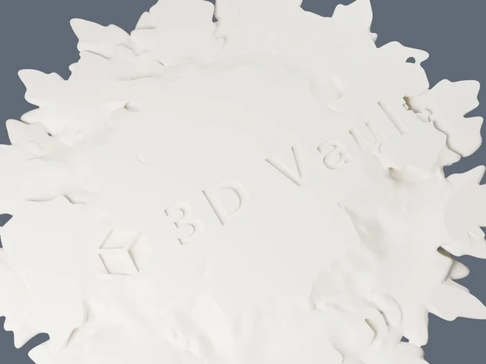

Pumpkin Witchling
HalloweenFigureSupports78 mm≈ 5 h≈ 40 g PLA
Pumpkin Patch Pals #1: a cute little witch on her jack-o'-lantern. Watertight, flat bottom for a solid first layer, checked in 3D Vault. More of the series every couple of days until Halloween.
Art: ADK Workshop (AI) · 3D: Meshy AI · CC BY 4.0